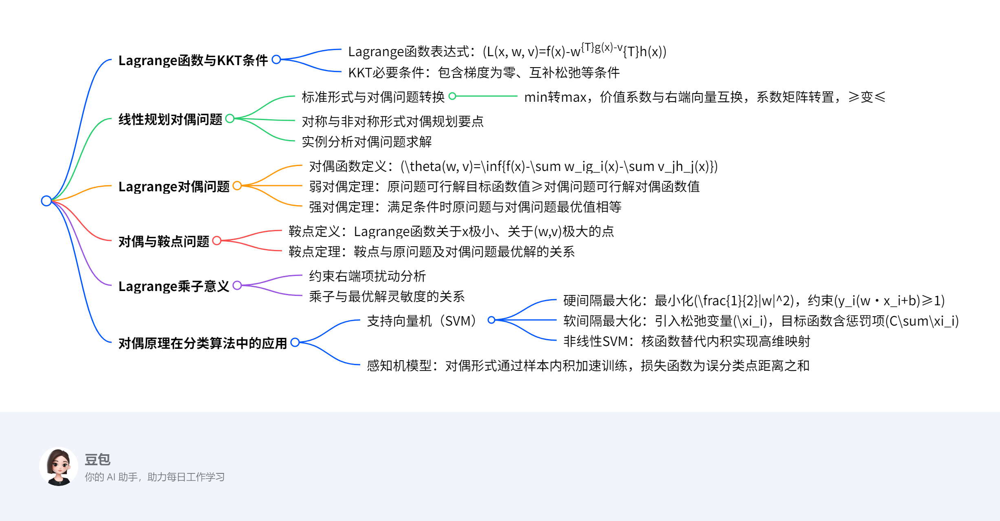

有约束优化¶
总览¶
一段话总结¶
文档围绕最优化方法中的对偶原理展开，先介绍了Lagrange函数及KKT必要条件，阐述线性规划问题及其对偶问题的形式与转换要点，通过实例说明对称与非对称形式对偶规划的求解，引入Lagrange对偶问题及对偶函数，证明弱对偶定理与强对偶定理，探讨对偶与鞍点问题的关系、Lagrange乘子的意义，最后结合支持向量机和感知机介绍对偶原理在分类算法中的应用，涉及硬间隔、软间隔最大化及非线性SVM的核函数等内容。
思维导图¶

详细总结¶
一、最优化基础：Lagrange函数与KKT条件¶
- Lagrange函数：用于处理带约束的优化问题，表达式为 \(L(x, w, v)=f(x)-w^{T}g(x)-v^{T}h(x)\)，其中 \(w, v\) 为Lagrange乘子。
- KKT必要条件：一阶必要条件，包含：
- \(\nabla_{x}L(x, w, v)=0\)（梯度为零）
- \(w_i g_i(x)=0\)（互补松弛条件）
- \(g_i(x)≥0\)，\(h_j(x)=0\)，\(w_i≥0\)（约束条件）
二、线性规划对偶问题¶
- 标准形式与对偶转换
- 原问题：\(\min cx\)，\(s.t. Ax≥b\)，\(x≥0\)
- 对偶问题：\(\max wb\)，\(s.t. wA≤c\)，\(w≥0\)
-
转换要点：
- min变max，价值系数 \(c\) 与右端向量 \(b\) 互换
- 系数矩阵 \(A\) 转置，约束不等式方向反转（≥变≤）
- 原问题约束个数=对偶问题变量个数，反之亦然
-
对称与非对称形式
- 对称形式：约束均为≥或≤，对偶变量符号确定（≥0）。
-
非对称形式：含等式约束时，对偶变量无符号限制，如 \(Ax=b\) 对应对偶变量 \(w=u-v\)（\(u, v≥0\)）。
-
实例分析
- 例1：原问题 \(\min 8x_1+16x_2+12x_3\)，\(s.t. x_1+4x_2≥2\)，\(2x_1+4x_2+4x_3≥3\)，对偶问题为 \(\max 2w_1+3w_2\)，\(s.t. w_1+2w_2≤8\)，\(4w_1≤16\)，\(4w_2≤12\)。
三、Lagrange对偶问题¶
- 对偶函数与问题定义
- 对偶函数：\(\theta(w, v)=\inf\{f(x)-w^{T}g(x)-v^{T}h(x)|x∈D\}\)，是关于 \(w, v\) 的凹函数。
-
对偶问题：\(\max \theta(w, v)\)，\(s.t. w≥0\)。
-
对偶定理
- 弱对偶定理：原问题可行解 \(x\) 与对偶问题可行解 \((w, v)\) 满足 \(f(x)≥\theta(w, v)\)，推论包括对偶间隙 \(\delta=f_{\min}-\theta_{\max}≥0\)。
- 强对偶定理：当 \(f\) 凸、\(g_i\) 凹、\(h_j\) 线性且存在严格可行解时，\(f_{\min}=\theta_{\max}\)。
四、对偶与鞍点问题¶
-
鞍点定义：点 \((\bar{x}, \bar{w}, \bar{v})\) 满足对任意 \(x, w≥0, v\)，有 \(L(\bar{x}, w, v)≤L(\bar{x}, \bar{w}, \bar{v})≤L(x, \bar{w}, \bar{v})\)，即关于 \(x\) 极小、关于 \((w, v)\) 极大。
-
鞍点定理
- 鞍点必为原问题与对偶问题的最优解。
- 当 \(f\) 凸、\(g_i\) 凹、\(h_j\) 线性时，最优解对应鞍点。
五、Lagrange乘子的意义¶
- 约束扰动分析：
- 等式约束 \(h(x)=\lambda\) 扰动时，乘子 \(v^*\) 表示目标函数对 \(\lambda\) 的灵敏度，即 \(\frac{d}{d\lambda}f(x^*(\lambda))|_{\lambda=0}=v^*\)。
- 不等式约束 \(g(x)≥\varepsilon\) 扰动时，若约束起作用（\(g(x^*)=0\)），乘子 \(w^*\) 为灵敏度；若不起作用（\(g(x^*)>0\)），\(w^*=0\)。
六、对偶原理在分类算法中的应用¶
- 支持向量机（SVM）
- 硬间隔最大化：
- 目标：\(\min \frac{1}{2}\|w\|^2\)，约束 \(y_i(w·x_i+b)≥1\)。
- 对偶问题：\(\max -\frac{1}{2}\sum_{i,j}\alpha_i\alpha_jy_iy_jx_i·x_j+\sum\alpha_i\)，\(s.t. \sum\alpha_iy_i=0\)，\(\alpha_i≥0\)。
- 软间隔最大化：引入松弛变量 \(\xi_i≥0\)，目标函数为 \(\min \frac{1}{2}\|w\|^2+C\sum\xi_i\)，对偶约束为 \(0≤\alpha_i≤C\)。
-
非线性SVM：通过核函数 \(K(x_i, x_j)=\phi(x_i)·\phi(x_j)\) 将数据映射到高维空间，常见核函数包括多项式核、RBF核。
-
感知机模型
- 对偶形式：将 \(w, b\) 表示为样本的线性组合 \(w=\sum n_ihy_ix_i\)，\(b=\sum n_ihy_i\)，通过计算样本内积矩阵 \(G=[x_i·x_j]\) 加速训练。
关键问题¶
- 什么是弱对偶定理？其核心结论是什么？
-
答案：弱对偶定理指出，原问题可行解的目标函数值不小于对偶问题可行解的对偶函数值（\(f(\bar{x})≥\theta(\bar{w}, \bar{v})\)）。核心结论包括：对偶间隙 \(\delta=f_{\min}-\theta_{\max}≥0\)；若原问题无界（\(f_{\min}=-\infty\)），则对偶函数恒为 \(-\infty\)；若对偶问题无界（\(\theta_{\max}=+\infty\)），则原问题无可行解。
-
线性规划对偶问题的转换规则有哪些？以标准形式为例说明。
- 答案：转换规则包括：
- 目标函数：min转max，价值系数与右端向量互换。
- 约束条件：系数矩阵转置，不等式方向反转（≥变≤）。
- 变量符号：原问题约束为≥时，对偶变量≥0；等式约束对应对偶变量无符号限制。
-
示例：原问题 \(\min cx\)，\(s.t. Ax≥b\)，\(x≥0\) 的对偶问题为 \(\max wb\)，\(s.t. wA≤c\)，\(w≥0\)。
-
支持向量机中核函数的作用是什么？常见的核函数有哪些？
- 答案：核函数的作用是将低维空间中的非线性可分数据映射到高维空间，使其线性可分，同时避免直接计算高维向量的内积，降低计算复杂度。
- 常见核函数：
- 多项式核：\(K(x, z)=(x·z)^d\)
- 径向基函数（RBF）：\(K(x, z)=e^{-\|x-z\|^2/2\sigma}\)
- 双曲正切核：\(K(x, z)=\tanh(\kappa x·z+\theta)\)
对偶原理与线性规划对偶问题总结¶
一、核心概念：线性规划对偶问题¶
原问题标准形式（以极小化为例）：
[
\begin{cases}
\min & c^T x \
\text{s.t.} & Ax \geq b \
& x \geq 0
\end{cases}
]
- 变量：\(x \in \mathbb{R}^n\) 为决策变量，\(c\) 为价值系数向量，\(A\) 为约束矩阵，\(b\) 为右端项向量。
对偶问题形式：
[
\begin{cases}
\max & w^T b \
\text{s.t.} & w^T A \leq c^T \
& w \geq 0
\end{cases}
]
- 变量：\(w \in \mathbb{R}^m\) 为对偶变量，对应原问题的 \(m\) 个约束条件。
关键关系：
- 原问题是 极小化，对偶问题是 极大化（min ↔ max）。
- 原问题的 约束矩阵转置 构成对偶问题的约束矩阵（\(A \to A^T\)）。
- 原问题的 右端项 \(b\) 成为对偶问题的价值系数，原问题的 价值系数 \(c\) 成为对偶问题的右端项（\(b \leftrightarrow c\)）。
- 原问题约束的 不等式方向反转（\(\geq \to \leq\)）。
二、对偶问题的对偶是原问题（对偶性定理）¶
推导过程：
1. 对偶问题（以矩阵形式表示）：
[
\max w^T b \quad \text{s.t.} w^T A \leq c^T, w \geq 0
]
2. 将对偶问题转换为原问题形式：
- 目标函数：\(\max \ w^T b \equiv \min \ -w^T b\)
- 约束条件：\(w^T A \leq c^T \equiv -w^T A \geq -c^T\)
令 \(w^T = u\)，则对偶问题等价于：
[
\min -u b \quad \text{s.t.} -A^T u \geq -c, u \geq 0
]
3. 构造对偶问题的对偶问题：
- 原问题（对偶问题的对偶）变量设为 \(x\)，则：
[
\max (-c)^T x \quad \text{s.t.} (-AT)T x \leq -b, x \geq 0
]
- 化简得：
[
\max -c^T x \quad \text{s.t.} A x \leq -b, x \geq 0 \quad \text{（此处可能存在符号修正，实际应为与原问题一致的约束）}
]
最终通过符号调整，可证明对偶问题的对偶 等价于原问题。
结论：对偶问题与原问题互为对偶，形成对偶对称性。
三、求解方法：对偶问题的转换规则¶
1. 对称形式对偶规划要点¶
- 目标函数：min → max（或 max → min）。
- 系数与右端项：价值系数 \(c\) 与右端项 \(b\) 互换。
- 约束矩阵：转置（\(A \to A^T\)）。
- 不等式方向：反转（\(\geq \to \leq\) 或 \(\leq \to \geq\)）。
- 变量与约束个数：原问题约束个数 = 对偶问题变量个数；原问题变量个数 = 对偶问题约束个数。
2. 非对称形式对偶规划¶
- 若原问题包含 等式约束（如 \(Ax = b\)），则对偶变量 无符号限制（可正可负）。
- 若原问题约束为 \(\leq\)，对偶变量符号为 \(\geq 0\)；若为 \(\geq\)，对偶变量符号为 \(\leq 0\)（需结合具体转换规则）。
四、示例：线性规划对偶问题求解¶
原问题（例1，选自文档）：
[
\begin{cases}
\min & 8x_1 + 16x_2 + 12x_3 \
\text{s.t.} & x_1 + 4x_2 \geq 2 \
& 2x_1 + 4x_2 + 4x_3 \geq 3 \
& x_1, x_2, x_3 \geq 0
\end{cases}
]
求解对偶问题步骤：
1. 确定原问题参数：
- 价值系数向量：\(c = [8, 16, 12]^T\)
- 约束矩阵：\(A = \begin{bmatrix} 1 & 4 & 0 \\ 2 & 4 & 4 \end{bmatrix}\)
- 右端项向量：\(b = [2, 3]^T\)
- 变量：\(x = [x_1, x_2, x_3]^T \geq 0\)
- 根据对偶规则构造对偶问题：
- 目标函数：max \(w^T b = 2w_1 + 3w_2\)
- 约束条件：
- 对原问题每个变量 \(x_i\)，对偶问题对应一个约束：
- \(x_1\)：\(w_1 \cdot 1 + w_2 \cdot 2 \leq 8\)（来自 \(A\) 的第一列）
- \(x_2\)：\(w_1 \cdot 4 + w_2 \cdot 4 \leq 16\)（来自 \(A\) 的第二列）
- \(x_3\)：\(w_1 \cdot 0 + w_2 \cdot 4 \leq 12\)（来自 \(A\) 的第三列）
- 变量符号：\(w_1, w_2 \geq 0\)
对偶问题最终形式：
[
\begin{cases}
\max & 2w_1 + 3w_2 \
\text{s.t.} & w_1 + 2w_2 \leq 8 \
& 4w_1 + 4w_2 \leq 16 \
& 4w_2 \leq 12 \
& w_1, w_2 \geq 0
\end{cases}
]
验证对偶性定理：
- 若继续对上述对偶问题求对偶，可通过同样规则还原为原问题，证明对偶的对称性。
五、重点总结¶
- 对偶原理核心：通过构造对偶问题，将原问题转化为对称的优化问题，利用对偶性定理简化求解（如原问题难解时可转而求解对偶问题）。
- 关键性质：
- 对偶问题的对偶是原问题（对偶对称性）。
- 弱对偶性：原问题最优值 ≥ 对偶问题最优值（当强对偶条件满足时，两者相等）。
- 应用场景：
- 线性规划中通过对偶问题求解原问题（如单纯形法的对偶版本）。
- 机器学习中支持向量机（SVM）的对偶形式推导（利用核函数处理非线性问题）。
公式速查表：
| 原问题（min） | 对偶问题（max） |
|-----------------------|-----------------------|
| 目标函数：\(c^T x\) | 目标函数：\(w^T b\) |
| 约束：\(Ax \geq b\) | 约束：\(w^T A \leq c^T\) |
| 变量：\(x \geq 0\) | 变量：\(w \geq 0\) |
对偶与支持向量机总结¶
一、核心概念：超平面与线性分类器¶
定义：
- 超平面：在 \(n\) 维空间中，线性分类器的决策边界为超平面 \(w^T x + b = 0\)，将空间划分为正负两类（如 \(y=+1\) 和 \(y=-1\)）。
- 目标：寻找最优超平面，使分类准确率高且对新样本泛化能力强。
关键问题：
1. 不同超平面对新样本分类效果是否相同？
2. 最优超平面的标准：使两类样本到超平面的间隔（Margin）最大化，降低误分类风险。
二、间隔度量：函数间隔与几何间隔¶
1. 函数间隔¶
- 定义：
- 样本点 \((x_i, y_i)\) 的函数间隔：\(\hat{\gamma}_i = y_i(w^T x_i + b)\)
- 数据集的函数间隔：\(\hat{\gamma} = \min_i \hat{\gamma}_i\)
- 缺陷：参数 \(w, b\) 成比例缩放时（如 \(2w, 2b\)），函数间隔随之缩放，但超平面本质不变，导致度量不唯一。
2. 几何间隔¶
- 定义：
- 样本点 \((x_i, y_i)\) 的几何间隔：\(\gamma_i = \frac{y_i(w^T x_i + b)}{\|w\|}\)
- 数据集的几何间隔：\(\gamma = \min_i \gamma_i\)
- 优点：对 \(w, b\) 的缩放不敏感，是标准化的距离度量，直接反映样本到超平面的实际距离。
对比：
| 指标 | 函数间隔 | 几何间隔 |
|--------------|-------------------------|-------------------------|
| 缩放不变性 | 不不变（随 \(w, b\) 变化） | 不变（仅与超平面位置有关） |
| 物理意义 | 带符号的“相对距离” | 标准化的“绝对距离” |
三、硬间隔最大化支持向量机（线性可分）¶
目标：寻找超平面，使几何间隔最大化，即：
[
\max \quad \gamma = \frac{2}{|w|} \quad \text{s.t.} \quad y_i(w^T x_i + b) \geq 1 \quad (i=1,2,\dots,n)
]
- 等价优化问题：最小化 \(\frac{1}{2}\|w\|^2\)（凸二次规划问题），约束为 \(y_i(w^T x_i + b) \geq 1\)。
求解方法：对偶法
1. 构造Lagrange函数：
[
L(w, b, \alpha) = \frac{1}{2}|w|^2 - \sum_{i=1}^n \alpha_i \left(y_i(w^T x_i + b) - 1\right), \quad \alpha_i \geq 0
]
2. 对 \(w, b\) 求极小值：
- 求导并令梯度为零：
[
w = \sum_{i=1}^n \alpha_i y_i x_i, \quad \sum_{i=1}^n \alpha_i y_i = 0
]
- 代入化简得对偶函数：
[
\theta(\alpha) = \sum_{i=1}^n \alpha_i - \frac{1}{2} \sum_{i,j=1}^n \alpha_i \alpha_j y_i y_j x_i^T x_j
]
3. 对 \(\alpha\) 求极大值：
[
\max_\alpha \quad \theta(\alpha) \quad \text{s.t.} \quad \sum_{i=1}^n \alpha_i y_i = 0, \alpha_i \geq 0
]
4. 求解后验参数：
- 最优 \(w^*\)：\(w^* = \sum_{i=1}^n \alpha_i^* y_i x_i\)
- 最优 \(b^*\)：对支持向量 \(x_j\)（\(\alpha_j^* > 0\)），\(b^* = y_j - w^{*T} x_j\)。
支持向量：
- 满足 \(y_i(w^T x_i + b) = 1\) 的样本点，决定超平面位置，其余样本不影响决策边界。
四、示例：硬间隔SVM求解¶
问题：已知正例点 \(x_1=(1,2)^T, x_2=(2,3)^T, x_3=(3,3)^T\)，负例点 \(x_4=(2,1)^T, x_5=(3,2)^T\)，求最大间隔超平面。
步骤：
1. 定义样本与标签：
- 正例：\(y_1=y_2=y_3=+1\)，负例：\(y_4=y_5=-1\)。
2. 构造对偶问题：
- 目标函数：
[
\max \quad \sum_{i=1}^5 \alpha_i - \frac{1}{2} \sum_{i,j=1}^5 \alpha_i \alpha_j y_i y_j (x_i \cdot x_j)
]
- 约束：\(\alpha_1 + \alpha_2 + \alpha_3 - \alpha_4 - \alpha_5 = 0\)，\(\alpha_i \geq 0\)。
3. 计算样本内积矩阵：
| \(x_i \cdot x_j\) | \(x_1\) | \(x_2\) | \(x_3\) | \(x_4\) | \(x_5\) |
|-------------------|---------|---------|---------|---------|---------|
| \(x_1\) | 5 | 8 | 9 | 4 | 5 |
| \(x_2\) | 8 | 13 | 15 | 7 | 12 |
| \(x_3\) | 9 | 15 | 18 | 9 | 15 |
| \(x_4\) | 4 | 7 | 9 | 5 | 8 |
| \(x_5\) | 5 | 12 | 15 | 8 | 13 |
4. 求解对偶问题（简化假设仅 \(\alpha_1, \alpha_4 > 0\)）：
- 设 \(\alpha_1 = \alpha, \alpha_4 = \alpha\)（由约束 \(\alpha_1 - \alpha_4 = 0\)），其余 \(\alpha_i=0\)，代入目标函数：
[
\max \quad 2\alpha - \frac{1}{2} \left( \alpha^2 (1 \cdot 1 \cdot 5) + \alpha^2 (-1 \cdot -1 \cdot 5) - 2\alpha^2 (1 \cdot -1 \cdot 4) \right)
]
化简得：\(\max \quad 2\alpha - 7\alpha^2\)，解得 \(\alpha = \frac{1}{7}\)。
5. 计算最优参数：
- \(w^* = \alpha y_1 x_1 + \alpha y_4 x_4 = \frac{1}{7}(x_1 - x_4) = \frac{1}{7}(-1, 1)^T\)
- 取支持向量 \(x_1\)，计算 \(b^* = y_1 - w^{*T} x_1 = 1 - \frac{1}{7}(-1 \cdot 1 + 1 \cdot 2) = \frac{6}{7}\)。
6. 超平面方程：
[
-\frac{1}{7}x_1 + \frac{1}{7}x_2 + \frac{6}{7} = 0 \quad \Rightarrow \quad -x_1 + x_2 + 6 = 0 \quad \text{（化简为）} \quad x_2 = x_1 - 6
]
结果可视化：
- 超平面：\(x_2 = x_1 - 6\)
- 间隔边界：\(x_2 = x_1 - 4\) 和 \(x_2 = x_1 - 8\)
- 支持向量：\(x_1\) 和 \(x_4\)（距超平面最近的样本点）。
五、软间隔与非线性SVM（扩展）¶
1. 软间隔最大化（含噪音数据）¶
- 目标：允许少量样本误分类，引入松弛变量 \(\xi_i \geq 0\)，目标函数为：
[ \min \quad \frac{1}{2}|w|^2 + C \sum_{i=1}^n \xi_i \quad \text{s.t.} \quad y_i(w^T x_i + b) \geq 1 - \xi_i, \xi_i \geq 0 ] - \(C\)：惩罚参数，平衡间隔大小与误分类代价。
2. 非线性SVM（核技巧）¶
- 思想：通过映射 \(\phi: x \to \mathcal{H}\) 将数据映射到高维空间，使非线性问题线性可分。
- 核函数：避免显式高维计算，直接定义内积 \(K(x_i, x_j) = \phi(x_i) \cdot \phi(x_j)\)，常见核函数：
- 多项式核：\(K(x, z) = (x \cdot z + c)^d\)
- 高斯核（RBF）：\(K(x, z) = e^{-\|x-z\|^2/\sigma^2}\)
- 对偶问题：将内积替换为核函数，其余步骤与硬间隔SVM一致。
六、总结¶
| 方法 | 适用场景 | 核心思想 | 关键公式/参数 |
|---|---|---|---|
| 硬间隔SVM | 线性可分数据 | 最大化几何间隔，解凸二次规划 | \(\min \frac{1}{2}\|w\|^2\) |
| 软间隔SVM | 近线性可分数据（含噪音） | 引入松弛变量，平衡间隔与误分类 | \(C\)（惩罚参数） |
| 非线性SVM | 非线性可分数据 | 核函数映射到高维空间 | \(K(x_i, x_j)\) |
支持向量机三宝：
1. 间隔：几何间隔最大化是优化目标；
2. 对偶：通过对偶法简化计算，引入核技巧；
3. 核技巧：解决非线性分类问题，避免维度灾难。
对偶与感知机总结¶
一、感知机模型基础¶
定义：
感知机是二分类线性判别模型，用于解决线性可分问题。其数学表达式为：
[
f(x) = \text{sign}(w^T x + b)
]
- 输入：特征向量 \(x \in \mathbb{R}^n\)
- 输出：类别 \(y \in \{-1, +1\}\)
- 超平面：决策边界 \(w^T x + b = 0\)，将空间分为正负两类。
核心思想：
通过迭代调整参数 \(w, b\)，使误分类点到超平面的距离之和最小。
损失函数：
[
L(w, b) = -\sum_{x_i \in M} y_i (w^T x_i + b)
]
- \(M\)：误分类点集合
- 特点：非负函数，误分类点越少或距离越近，损失越小。
二、感知机学习算法（原始形式）¶
求解方法：随机梯度下降法
1. 初始化参数：取 \(w_0 = 0, b_0 = 0\) 或任意初值。
2. 迭代更新：
- 选取误分类点 \((x_i, y_i)\)，即满足 \(y_i (w^T x_i + b) \leq 0\)。
- 更新规则：
[
w \leftarrow w + \eta y_i x_i, \quad b \leftarrow b + \eta y_i
]
其中 \(\eta \in (0, 1]\) 为学习率。
3. 终止条件：无误分类点或达到最大迭代次数。
示例：二维线性可分数据分类
问题：已知正例点 \(x_1=(1,1)^T, x_2=(2,2)^T\)，负例点 \(x_3=(1,-1)^T\)，用感知机算法求分类超平面。
步骤：
1. 初始化：\(w = (0, 0)^T, b = 0, \eta = 1\)。
2. 迭代过程：
- 第1次：选取 \(x_1=(1,1)^T, y_1=+1\)，此时 \(w^T x_1 + b = 0 \leq 0\)（误分类），更新：
[
w = (0 + 1 \cdot 1 \cdot 1, 0 + 1 \cdot 1 \cdot 1) = (1, 1), \quad b = 0 + 1 \cdot 1 = 1
]
超平面：\(x_1 + x_2 + 1 = 0\)。
- 第2次：检查 \(x_3=(1,-1)^T, y_3=-1\)，计算 \(1 \cdot 1 + 1 \cdot (-1) + 1 = 1 > 0\)（正确分类）。
- 第3次：选取 \(x_2=(2,2)^T, y_2=+1\)，计算 \(1 \cdot 2 + 1 \cdot 2 + 1 = 5 > 0\)（正确分类）。
- 当前无误分类点，算法终止。
3. 最终超平面：\(x_1 + x_2 + 1 = 0\)。
三、感知机模型的对偶形式¶
核心思想：
将参数 \(w, b\) 表示为样本的线性组合，减少计算量。
- 设每个样本 \((x_i, y_i)\) 被更新 \(n_i\) 次，则：
[
w = \sum_{i=1}^n n_i \eta y_i x_i, \quad b = \sum_{i=1}^n n_i \eta y_i
]
- 对偶形式模型：
[
f(x) = \text{sign}\left( \sum_{i=1}^n n_i \eta y_i (x_i \cdot x) + \sum_{i=1}^n n_i \eta y_i \right)
]
求解方法：
1. 初始化计数：\(n_i = 0\)（\(i=1,2,\dots,n\)）。
2. 计算Gram矩阵：预计算样本内积矩阵 \(G = [x_i \cdot x_j]_{n \times n}\)，加速后续计算。
3. 迭代更新：
- 选取误分类点 \((x_j, y_j)\)，即满足：
[
y_j \left( \sum_{i=1}^n n_i \eta y_i (x_i \cdot x_j) + \sum_{i=1}^n n_i \eta y_i \right) \leq 0
]
- 更新 \(n_j \leftarrow n_j + 1\)。
4. 终止条件：无误分类点。
示例：对偶形式求解同一问题
问题：同上例，使用对偶形式求解。
步骤：
1. 初始化：\(n_1 = n_2 = n_3 = 0, \eta = 1\)。
2. 计算Gram矩阵：
[
G = \begin{bmatrix}
x_1 \cdot x_1 = 2 & x_1 \cdot x_2 = 4 & x_1 \cdot x_3 = 0 \
x_2 \cdot x_1 = 4 & x_2 \cdot x_2 = 8 & x_2 \cdot x_3 = 0 \
x_3 \cdot x_1 = 0 & x_3 \cdot x_2 = 0 & x_3 \cdot x_3 = 2
\end{bmatrix}
]
3. 迭代过程：
- 第1次：选取 \(x_1=(1,1)^T, y_1=+1\)，此时 \(n_1=1\)，计算：
[
w = 1 \cdot 1 \cdot (1,1) = (1,1), \quad b = 1 \cdot 1 = 1
]
- 第2次：检查 \(x_3=(1,-1)^T, y_3=-1\)，计算：
[
y_3 \left( n_1 \eta y_1 (x_1 \cdot x_3) + b \right) = -1 \cdot (1 \cdot 1 \cdot 0 + 1) = -1 \leq 0 \quad \text{（误分类）}
]
更新 \(n_3=1\)，计算：
[
w = (1,1) + 1 \cdot (-1) \cdot (1,-1) = (0, 2), \quad b = 1 + 1 \cdot (-1) = 0
]
- 第3次：检查 \(x_1=(1,1)^T, y_1=+1\)，计算：
[
y_1 \left( n_1 \eta y_1 (x_1 \cdot x_1) + n_3 \eta y_3 (x_3 \cdot x_1) + b \right) = 1 \cdot (1 \cdot 2 + 1 \cdot (-1) \cdot 0 + 0) = 2 > 0 \quad \text{（正确分类）}
]
- 后续无误分类点，算法终止。
4. 最终参数：
[
w = (0, 2), \quad b = 0 \quad \Rightarrow \quad \text{超平面：} 2x_2 = 0 \quad \text{即} x_2 = 0
]
四、原始形式与对偶形式对比¶
| 形式 | 优点 | 缺点 | 适用场景 |
|---|---|---|---|
| 原始形式 | 直观，无需预计算内积 | 高维数据计算量大 | 特征维度低的数据 |
| 对偶形式 | 利用Gram矩阵加速计算 | 需要存储内积矩阵，占用内存 | 样本数量少的数据 |
五、重点总结¶
- 核心目标：通过迭代调整超平面，使误分类点距离之和最小。
- 关键性质：
- 仅适用于线性可分数据，若数据不可分则算法不收敛。
- 解不唯一，依赖初值和迭代顺序。
- 对偶形式核心：将参数表示为样本线性组合，通过预计算内积矩阵减少重复计算。
公式速查表：
- 原始更新规则：\(w \leftarrow w + \eta y_i x_i, \ b \leftarrow b + \eta y_i\)
- 对偶模型：\(f(x) = \text{sign}\left( \sum_{i=1}^n n_i \eta y_i (x_i \cdot x) + \sum_{i=1}^n n_i \eta y_i \right)\)